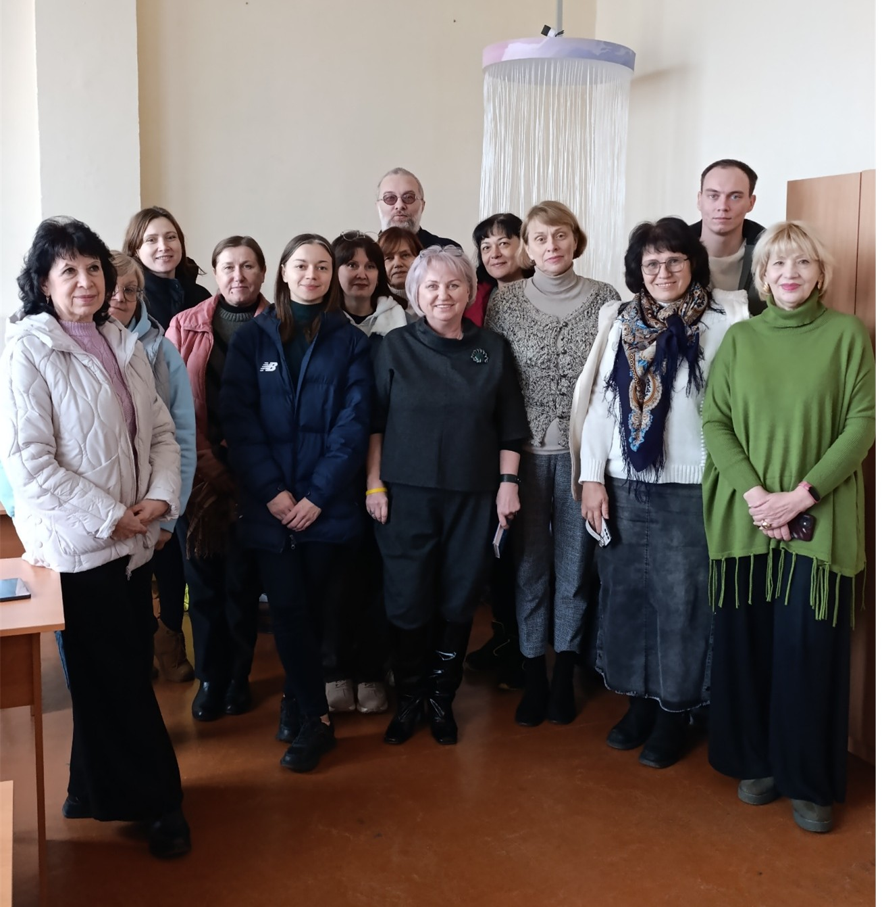

Center for Psychological Resilience and Wellbeing at HSEE
The Center for Psychological Resilience at the Department of Psychology of HIFL of Donbas State Pedagogical University was established to ensure and support an educational environment that is safe for the life and health of all participants in the educational process and allows their interests and needs to be met.
The Center for Psychological Resilience organizes and conducts activities aimed at promoting psychological, social, and professional knowledge (lectures, seminars, trainings, roundtables, etc.), carries out psychodiagnostic and developmental work, supports the practical training of highly qualified specialists, and provides students and graduates with services related to career guidance and preparation for work in their chosen profession. For the purpose of professional development, the Center also involves students in its activities, enabling them to develop their professional competencies.

The Center for Psychological Resilience provides the following services:
- Individual and group counselling for students, instructors, academic group curators, and other participants in the educational process
- Psychodiagnostics and psychological correction
- Educational information on mental health and psychological assistance
- Social and psychological support for students with special needs, among other services
The main tasks of the Center for Psychological Resilience are:
- Ensuring an individual approach to each participant in the educational process
- Promoting the full personal development of participants and creating comfortable socio-psychological conditions for their functioning
- Providing psychological support for the prevention of deviant behaviour, conflicts, and personal difficulties among participants in the educational process
- Increasing the psychological culture of all participants and fostering humane relations within student and teaching communities
- Creating conditions for social and personal self-actualization
The Center for Psychological Resilience provides its services to students, postgraduate students, instructors, and staff of HIFL of Donbas State Pedagogical University while adhering to the principles of confidentiality and professional ethics.
For the further information about the Center, visit https://edu.forlan.org.ua/?page_id=55142
← previous article